La Seconde Guerre mondiale a vu de nombreuses personnalités jouer des rôles cruciaux, tant sur le plan militaire que politique. Voici une liste des personnalités les plus importantes de cette période :
| Nom | Rôle | Camp | |
|---|---|---|---|
| Winston Churchill | Premier ministre du Royaume-Uni | Alliés | 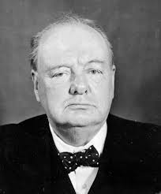 |
| Franklin D. Roosevelt | Président des États-Unis | Alliés | 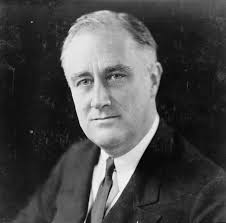 |
| Joseph Staline | Dirigeant de l'Union soviétique | Alliés | 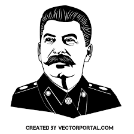 |
| Charles de Gaulle | Chef de la France libre | Alliés | 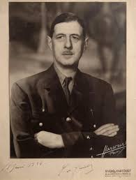 |
| Dwight D. Eisenhower | Commandant suprême des forces alliées en Europe | Alliés | 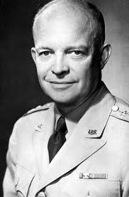 |
| Adolf Hitler | Führer de l'Allemagne nazie | Axe |
|
| Benito Mussolini | Dirigeant fasciste de l'Italie | Axe | 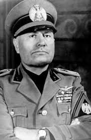 |
| Hideki Tojo | Premier ministre du Japon | Axe | 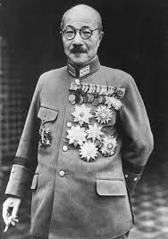 |
| Harry S. Truman | Président des États-Unis | Alliés | 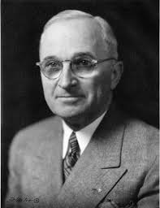 |
| Georgi Zhukov | Maréchal de l'Union soviétique | Alliés | 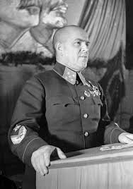 |
| Erwin Rommel | Général allemand | Axe | 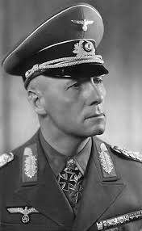 |
| Bernard Montgomery | Maréchal britannique | Alliés | 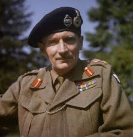 |
| Chester W. Nimitz | Commandant en chef de la flotte du Pacifique | Alliés | 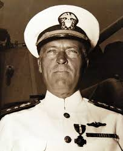 |
| George S. Patton | Général de l'armée américaine | Alliés | 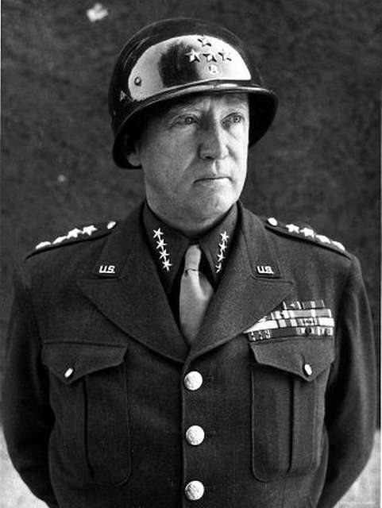 |
| Omar Bradley | Commandant de la 12e armée de groupe | Alliés | 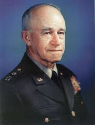 |
| William Slim | Commandant de la 14e armée britannique | Alliés | 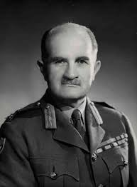 |
| Heinz Guderian | Général allemand | Axe | 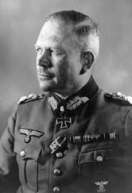 |
| Isoroku Yamamoto | Commandant en chef de la flotte combinée japonaise | Axe | 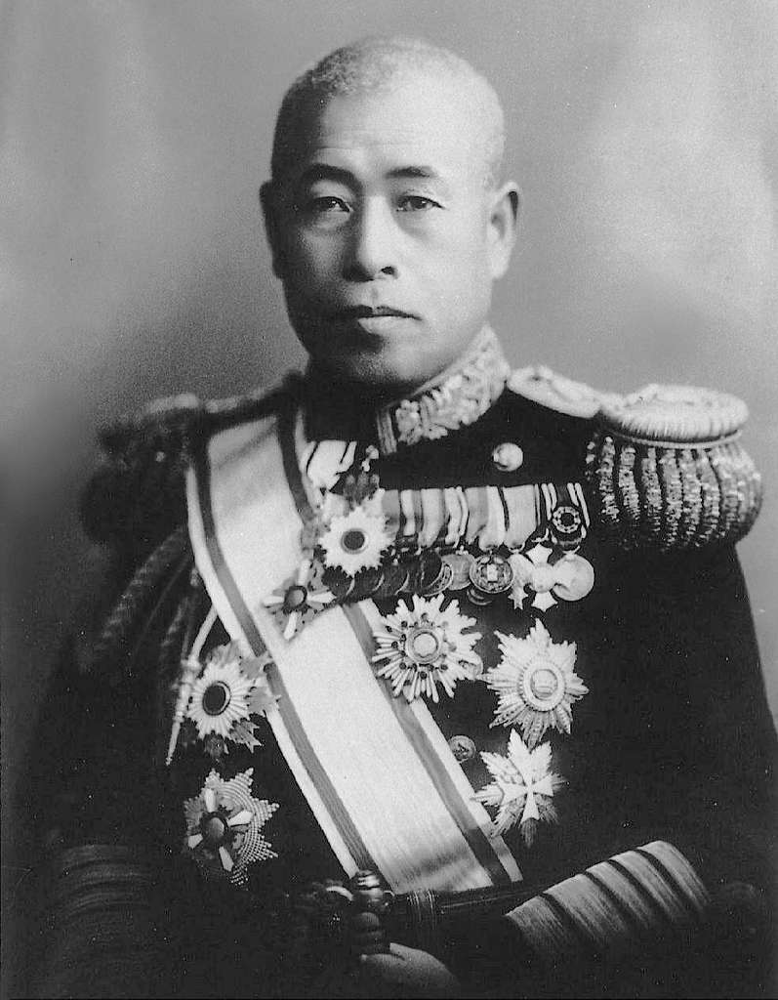 |
| Albert Kesselring | Maréchal de l'air allemand | Axe | 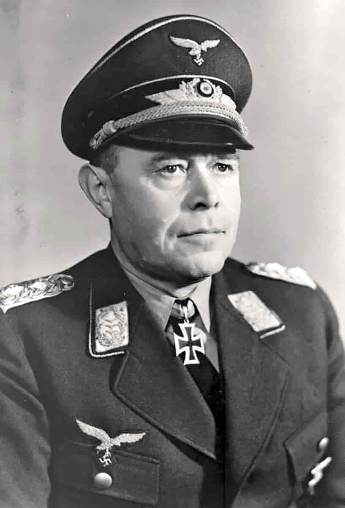 |
| Tomoyuki Yamashita | Général japonais | Axe | 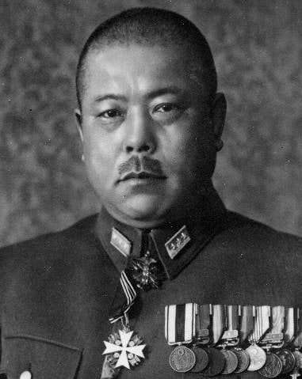 |
| Heinrich Himmler | Chef des SS et de la Gestapo | Axe | 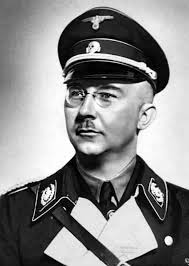 |